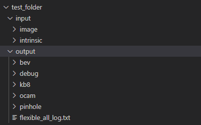
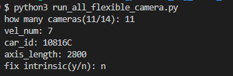
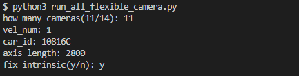
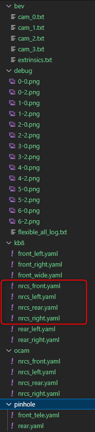
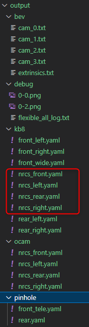

Support absolute path
From the perspective of executable input, the following parameters in config.yaml can simultaneously support the relative path and absolute path
environment_model_path: "data_format/environment/all_points.txt"apriltag_config: "config/common_param/apriltag_config.txt"0_image_path_0: "data_format/calib_image/front_wide_01.jpg"0_intrinsic: "data_format/calib_image/front_wide.yaml"environment_model_path: "data_format/environment/all_points.txt"apriltag_config: "config/common_param/apriltag_config.txt"0_image_path_0: "/home/inz2szh/zhangyichi/xcalib-eng/calibration_tools/camera_calib/data_format/calib_image/front_wide_01.jpg"0_intrinsic: "/home/inz2szh/zhangyichi/xcalib-eng/calibration_tools/camera_calib/data_format/calib_image/front_wide.yaml"If the path starts with "/", it is considered an absolute path. If it is not "/", it is considered to be a relative path.
From the perspective of the camera calibration script, the updated script name is run_all_flexible_camera_with_param.py
We believe that the relative path of the environment_model_path and Apriltag_config and the total path of tools are fixed and write to death in the script.
For the input interface of 3 new paths: (1) calibration image path (2) 7 internal reference paths from 7 stations out of the marker [The second calibration starts to be available, for one station calibration] (3) output results directory
The discrimination rules of the relative path and the absolute path are the same as the above. If it is "/", it is the absolute path, otherwise the relative path
Supplementary description:
(1) The calibration picture path is specified to the folder (the path is finally with a slope). It contains all the calibration pictures, named Front_wide_0x.jpg, nrcs_front_0x.jpg (x is 1/2/3/4/...)
(2) The inner ginseng path is specified to the folder (the path is finally with a slope), which is the first time the calibration of the calibration vehicle.
(3) The result output folder (the path is finally with a slash)

For the first 7 stations of each car, the running instruction format is as follows
python3 run_all_flexible_camera_with_param.py -n 14 -v 7 -id 10816C -a 2800 -f n -p1 /home/inz2szh/zhangyichi/xcalib-eng/test_folder/input/image/ -o /home/inz2szh/zhangyichi/xcalib-eng/test_folder/output/For the one -stop data after each car, the format of the running instructions is as follows
python3 run_all_flexible_camera_with_param.py -n 14 -v 1 -id 10816C -a 2800 -f y -p1 /home/inz2szh/zhangyichi/xcalib-eng/test_folder/input/image/ -p2 /home/inz2szh/zhangyichi/xcalib-eng/test_folder/input/intrinsic/ -o /home/inz2szh/zhangyichi/xcalib-eng/test_folder/output/The script that previously passed on in the program is still retained, and it can be used during the operation of this machine
Seven -stop example

One -stop example

2023.6.7 Update
tr： CNWVIII-45758 - Jira issue doesn't exist or you don't have permission to view it.
commit：2fd58164766
Movement items: KB8 model of the fish eye camera synchronized when calibration
Precautions:
(1) When the 7 stop and the 1st stop are fixed, there is no need to make any changes in the input
(2) After the calibration is over, there will be four more NRCS _*. Yaml under the KB8 folder
(3) Because one stop calibration needs to be introduced into the previous calibration results, it must be only the nrcs _*. Yaml in the OCAM folder as before. Since the KB8 folder output from 7 stops now there will be files with the same name.Be careful not to make mistakes
(4) Taking the configuration of 11 cameras as an example, the output of 7 stops and 1 stop is as follows
 